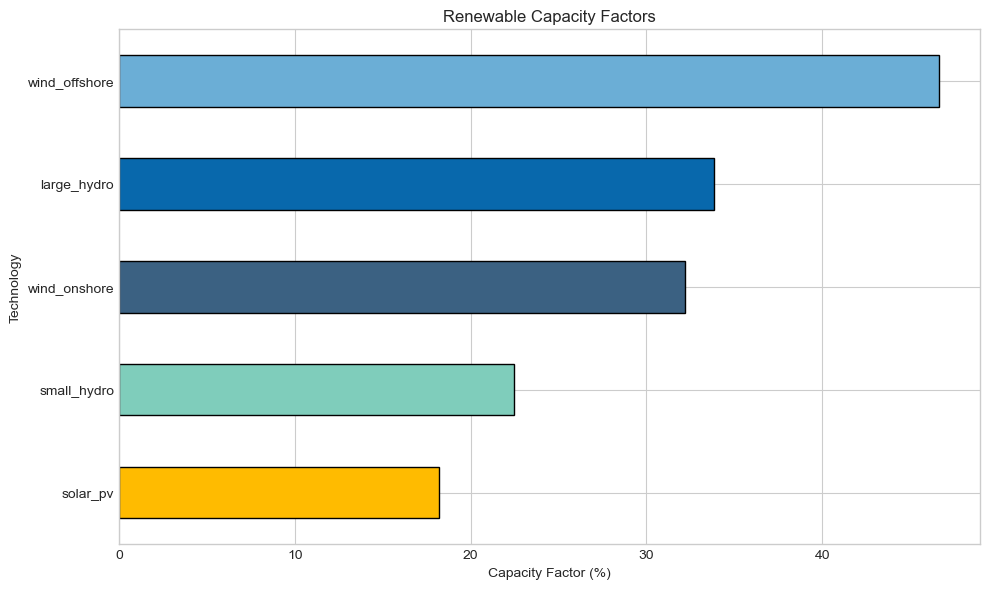
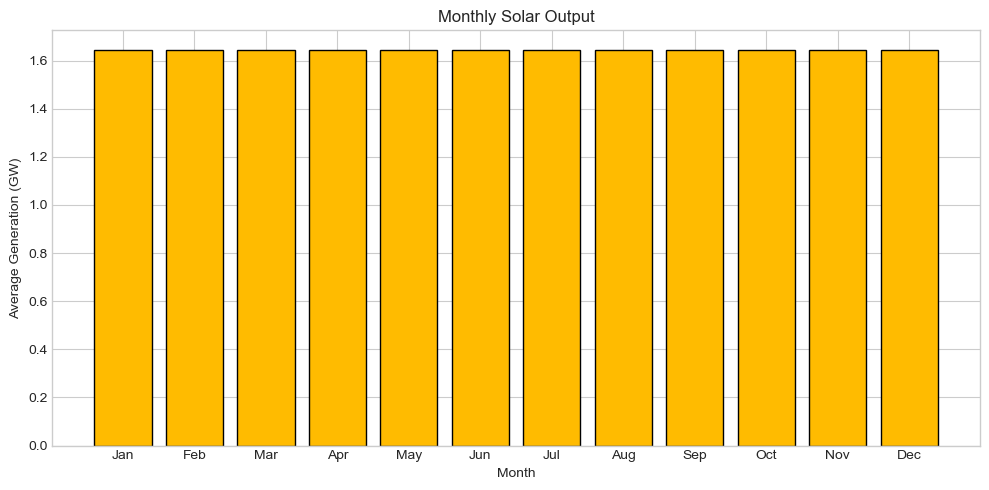

Renewable Generation#
This tutorial explores renewable generation modeling in PyPSA-GB, including wind, solar, and hydro.
What You’ll Learn#
Renewable capacity and distribution
Capacity factor analysis
Weather-dependent generation profiles
Curtailment and network constraints
Correlation between renewable sources
1. Setup#
[1]:
import pypsa
import pandas as pd
import numpy as np
import matplotlib.pyplot as plt
import warnings
import folium
from pyproj import Transformer
warnings.filterwarnings('ignore')
plt.style.use('seaborn-v0_8-whitegrid')
plt.rcParams['figure.figsize'] = [12, 6]
plt.rcParams['figure.dpi'] = 100
colors = {
'wind_onshore': '#3B6182', 'wind_offshore': '#6BAED6', 'solar_pv': '#FFBB00',
'large_hydro': '#0868AC', 'small_hydro': '#7FCDBB', 'marine': '#1F78B4'
}
print(f"PyPSA version: {pypsa.__version__}")
PyPSA version: 1.0.7
2. Load Network#
[2]:
# Load a solved network with renewables
n = pypsa.Network("../../../resources/network/Historical_2023_etys_solved.nc")
print(f"Network loaded")
print(f" Snapshots: {len(n.snapshots)}")
print(f" Generators: {len(n.generators)}")
INFO:pypsa.network.io:Imported network 'Historical_2023_etys (Full)' has buses, carriers, generators, lines, links, loads, storage_units, sub_networks, transformers
Network loaded
Snapshots: 168
Generators: 4766
3. Renewable Capacity Overview#
[3]:
# Filter renewable generators
renewable_carriers = ['wind_onshore', 'wind_offshore', 'solar_pv', 'large_hydro', 'small_hydro', 'marine']
renewables = n.generators[n.generators.carrier.isin(renewable_carriers)]
print(f"Renewable generators: {len(renewables)}")
# Capacity by type
capacity = renewables.groupby('carrier')['p_nom'].sum() / 1000 # GW
print("\nInstalled Capacity (GW):")
for carrier, cap in capacity.sort_values(ascending=False).items():
print(f" {carrier}: {cap:.2f} GW")
print(f"\nTotal Renewable: {capacity.sum():.2f} GW")
Renewable generators: 2104
Installed Capacity (GW):
wind_offshore: 14.68 GW
wind_onshore: 12.89 GW
solar_pv: 9.02 GW
large_hydro: 0.41 GW
small_hydro: 0.15 GW
Total Renewable: 37.15 GW
[4]:
# Capacity pie chart
fig, ax = plt.subplots(figsize=(10, 10))
capacity_plot = capacity[capacity > 0.1] # Only show > 100 MW
pie_colors = [colors.get(c, '#888888') for c in capacity_plot.index]
wedges, texts, autotexts = ax.pie(
capacity_plot, labels=capacity_plot.index,
autopct=lambda pct: f'{pct:.1f}%\n({pct/100*capacity_plot.sum():.1f} GW)',
colors=pie_colors, textprops={'fontsize': 11}
)
ax.set_title('Renewable Capacity Mix', fontsize=14)
plt.tight_layout()
plt.show()

4. Capacity Factor Analysis#
The capacity factor is the ratio of actual generation to potential generation if running at full capacity.
[5]:
# Calculate capacity factors
cf_data = []
for carrier in renewable_carriers:
carrier_gens = n.generators[n.generators.carrier == carrier].index
carrier_gens = carrier_gens[carrier_gens.isin(n.generators_t.p.columns)]
if len(carrier_gens) > 0:
generation = n.generators_t.p[carrier_gens].sum().sum()
capacity_mw = n.generators.loc[carrier_gens, 'p_nom'].sum()
max_gen = capacity_mw * len(n.snapshots)
if max_gen > 0:
cf = generation / max_gen * 100
cf_data.append({'Carrier': carrier, 'Capacity Factor (%)': cf})
cf_df = pd.DataFrame(cf_data).set_index('Carrier')
print("Capacity Factors:")
print(cf_df.round(1).to_string())
Capacity Factors:
Capacity Factor (%)
Carrier
wind_onshore 32.2
wind_offshore 46.6
solar_pv 18.2
large_hydro 33.8
small_hydro 22.5
[6]:
# Capacity factor bar chart
fig, ax = plt.subplots(figsize=(10, 6))
cf_sorted = cf_df.sort_values('Capacity Factor (%)', ascending=True)
bar_colors = [colors.get(c, '#888888') for c in cf_sorted.index]
cf_sorted['Capacity Factor (%)'].plot(kind='barh', ax=ax, color=bar_colors, edgecolor='black')
ax.set_xlabel('Capacity Factor (%)')
ax.set_ylabel('Technology')
ax.set_title('Renewable Capacity Factors')
plt.tight_layout()
plt.show()

5. Generation Profiles#
[7]:
# Aggregate generation by carrier
renewable_gen = pd.DataFrame()
for carrier in renewable_carriers:
carrier_gens = n.generators[n.generators.carrier == carrier].index
carrier_gens = carrier_gens[carrier_gens.isin(n.generators_t.p.columns)]
if len(carrier_gens) > 0:
renewable_gen[carrier] = n.generators_t.p[carrier_gens].sum(axis=1) / 1000 # GW
print("Generation Summary (GW):")
print(renewable_gen.describe().round(2))
Generation Summary (GW):
wind_onshore wind_offshore solar_pv large_hydro small_hydro
count 168.00 168.00 168.00 168.00 168.00
mean 4.15 6.85 1.64 0.14 0.03
std 1.12 2.96 1.92 0.17 0.04
min 0.80 1.19 -0.00 0.03 0.01
25% 3.62 4.55 0.00 0.03 0.01
50% 4.38 7.07 0.40 0.03 0.01
75% 4.89 9.45 3.60 0.40 0.07
max 6.05 12.19 5.35 0.41 0.10
[8]:
# Time series plot
fig, ax = plt.subplots(figsize=(14, 6))
for col in renewable_gen.columns:
ax.plot(renewable_gen.index, renewable_gen[col],
color=colors.get(col, '#888888'), label=col, linewidth=1)
ax.set_ylabel('Generation (GW)')
ax.set_xlabel('Time')
ax.set_title('Renewable Generation Profiles')
ax.legend(loc='upper right')
plt.tight_layout()
plt.show()

[9]:
# Stacked area chart
fig, ax = plt.subplots(figsize=(14, 6))
plot_colors = [colors.get(c, '#888888') for c in renewable_gen.columns]
ax.stackplot(renewable_gen.index, renewable_gen.T, labels=renewable_gen.columns, colors=plot_colors)
ax.set_ylabel('Generation (GW)')
ax.set_xlabel('Time')
ax.set_title('Stacked Renewable Generation')
ax.legend(loc='upper right')
plt.tight_layout()
plt.show()

6. Wind Analysis#
6.1 Onshore vs Offshore Wind#
[10]:
# Compare onshore and offshore
fig, axes = plt.subplots(1, 2, figsize=(14, 5))
wind_cols = [c for c in renewable_gen.columns if 'wind' in c]
for idx, col in enumerate(wind_cols):
if col in renewable_gen.columns:
ax = axes[idx]
ax.hist(renewable_gen[col], bins=50, color=colors.get(col), alpha=0.7, edgecolor='black')
ax.axvline(renewable_gen[col].mean(), color='red', linestyle='--',
label=f'Mean: {renewable_gen[col].mean():.1f} GW')
ax.set_xlabel('Generation (GW)')
ax.set_ylabel('Frequency (hours)')
ax.set_title(col.replace('_', ' ').title())
ax.legend()
plt.tight_layout()
plt.show()

[11]:
# Wind correlation
if 'wind_onshore' in renewable_gen.columns and 'wind_offshore' in renewable_gen.columns:
corr = renewable_gen['wind_onshore'].corr(renewable_gen['wind_offshore'])
fig, ax = plt.subplots(figsize=(8, 8))
ax.scatter(renewable_gen['wind_onshore'], renewable_gen['wind_offshore'],
alpha=0.3, s=10, color='blue')
ax.set_xlabel('Onshore Wind (GW)')
ax.set_ylabel('Offshore Wind (GW)')
ax.set_title(f'Wind Correlation: {corr:.3f}')
plt.tight_layout()
plt.show()

7. Solar Analysis#
7.1 Daily Profile#
[12]:
# Average daily solar profile
if 'solar_pv' in renewable_gen.columns:
solar = renewable_gen['solar_pv']
solar_hourly = solar.groupby(solar.index.hour).mean()
fig, ax = plt.subplots(figsize=(10, 5))
ax.plot(solar_hourly.index, solar_hourly.values,
color=colors['solar_pv'], linewidth=3)
ax.fill_between(solar_hourly.index, solar_hourly.values,
alpha=0.3, color=colors['solar_pv'])
ax.set_xlabel('Hour of Day')
ax.set_ylabel('Average Generation (GW)')
ax.set_title('Average Daily Solar Profile')
ax.set_xticks(range(0, 24, 2))
plt.tight_layout()
plt.show()

[13]:
# Monthly solar output
if 'solar_pv' in renewable_gen.columns:
solar_monthly = solar.groupby(solar.index.month).mean()
fig, ax = plt.subplots(figsize=(10, 5))
months = ['Jan', 'Feb', 'Mar', 'Apr', 'May', 'Jun',
'Jul', 'Aug', 'Sep', 'Oct', 'Nov', 'Dec']
ax.bar(range(1, 13), solar_monthly, color=colors['solar_pv'], edgecolor='black')
ax.set_xticks(range(1, 13))
ax.set_xticklabels(months)
ax.set_xlabel('Month')
ax.set_ylabel('Average Generation (GW)')
ax.set_title('Monthly Solar Output')
plt.tight_layout()
plt.show()

8. Curtailment Analysis#
[14]:
# Calculate curtailment
# Curtailment = available - actual
curtailment = pd.DataFrame()
for carrier in renewable_carriers:
carrier_gens = n.generators[n.generators.carrier == carrier].index
carrier_gens = carrier_gens[carrier_gens.isin(n.generators_t.p.columns)]
if len(carrier_gens) > 0:
actual = n.generators_t.p[carrier_gens].sum(axis=1)
# Get p_max_pu if available (time-varying capacity factor)
if hasattr(n.generators_t, 'p_max_pu') and len(n.generators_t.p_max_pu.columns) > 0:
available_gens = carrier_gens.intersection(n.generators_t.p_max_pu.columns)
if len(available_gens) > 0:
available = (n.generators_t.p_max_pu[available_gens] *
n.generators.loc[available_gens, 'p_nom']).sum(axis=1)
curtailment[carrier] = (available - actual) / 1000 # GW
if len(curtailment.columns) > 0:
print("Curtailment by Technology (GWh):")
for col in curtailment.columns:
total_curtailed = curtailment[col].sum() # GWh
print(f" {col}: {total_curtailed:.1f} GWh")
else:
print("No curtailment data available (p_max_pu not found)")
Curtailment by Technology (GWh):
wind_onshore: 272.9 GWh
wind_offshore: 144.4 GWh
solar_pv: 4.5 GWh
small_hydro: 10.8 GWh
[15]:
# Curtailment visualization
if len(curtailment.columns) > 0:
fig, ax = plt.subplots(figsize=(14, 5))
for col in curtailment.columns:
ax.fill_between(curtailment.index, curtailment[col],
alpha=0.5, color=colors.get(col, '#888888'), label=col)
ax.set_ylabel('Curtailment (GW)')
ax.set_xlabel('Time')
ax.set_title('Renewable Curtailment Over Time')
ax.legend()
plt.tight_layout()
plt.show()

9. Geographic Distribution#
[16]:
# Renewable capacity by bus
capacity_by_bus = renewables.groupby('bus')['p_nom'].sum() / 1000 # GW
print(f"Buses with renewables: {len(capacity_by_bus)}")
print(f"\nTop 10 Buses by Renewable Capacity (GW):")
print(capacity_by_bus.sort_values(ascending=False).head(10).round(2).to_string())
Buses with renewables: 449
Top 10 Buses by Renewable Capacity (GW):
bus
HUMR41 2.62
PEHE4K 1.54
NECT41 1.17
HAMB4A 1.13
KINT4J 1.08
RICH41 0.93
SIZE41 0.87
RACO41 0.78
LEIS4A 0.73
BODE41 0.58
[17]:
# Interactive map of renewable capacity
try:
# Convert bus coordinates from OSGB36 to WGS84 for folium
t = Transformer.from_crs('EPSG:27700', 'EPSG:4326', always_xy=True)
bus_coords = capacity_by_bus.index.to_series().apply(
lambda bus: t.transform(n.buses.loc[bus, 'x'], n.buses.loc[bus, 'y'])
)
bus_lons = bus_coords.apply(lambda c: c[0])
bus_lats = bus_coords.apply(lambda c: c[1])
# Create folium map
center_lat = bus_lats.mean()
center_lon = bus_lons.mean()
m = folium.Map(location=[center_lat, center_lon], zoom_start=6, tiles='CartoDB positron')
# Add renewable capacity markers
max_capacity = capacity_by_bus.max()
for bus in capacity_by_bus.index:
cap = capacity_by_bus[bus]
lon, lat = bus_lons[bus], bus_lats[bus]
# Color by capacity
if cap > 2.0:
color = '#DC143C' # Crimson for >2 GW
elif cap > 1.0:
color = '#FF8C00' # Orange for 1-2 GW
elif cap > 0.5:
color = '#FFD700' # Gold for 0.5-1 GW
else:
color = '#32CD32' # Green for <0.5 GW
# Size proportional to capacity
radius = 5 + (cap / max_capacity) * 20
folium.CircleMarker(
location=[lat, lon],
radius=radius,
color=color,
fill=True,
fillOpacity=0.6,
tooltip=f'{bus}: {cap:.2f} GW renewable'
).add_to(m)
# Add transmission lines for context
for line_id in n.lines.index:
bus0, bus1 = n.lines.loc[line_id, ['bus0', 'bus1']]
if bus0 in n.buses.index and bus1 in n.buses.index:
lon0, lat0 = t.transform(n.buses.loc[bus0, 'x'], n.buses.loc[bus0, 'y'])
lon1, lat1 = t.transform(n.buses.loc[bus1, 'x'], n.buses.loc[bus1, 'y'])
folium.PolyLine(
[[lat0, lon0], [lat1, lon1]],
color='gray',
weight=0.5,
opacity=0.3
).add_to(m)
display(m)
print('\nColor legend: Green (<0.5 GW) → Gold (0.5-1 GW) → Orange (1-2 GW) → Red (>2 GW)')
except Exception as e:
print(f'⚠️ Interactive map unavailable: {e}')
# Fallback to static plot
fig, ax = plt.subplots(figsize=(10, 12))
bus_x = n.buses.loc[capacity_by_bus.index, 'x']
bus_y = n.buses.loc[capacity_by_bus.index, 'y']
sizes = capacity_by_bus * 100
scatter = ax.scatter(bus_x, bus_y, s=sizes, c=capacity_by_bus,
cmap='YlOrRd', alpha=0.6, edgecolors='black', linewidth=0.5)
for line in n.lines.index:
bus0, bus1 = n.lines.loc[line, ['bus0', 'bus1']]
if bus0 in n.buses.index and bus1 in n.buses.index:
ax.plot([n.buses.loc[bus0, 'x'], n.buses.loc[bus1, 'x']],
[n.buses.loc[bus0, 'y'], n.buses.loc[bus1, 'y']],
color='gray', linewidth=0.3, alpha=0.5)
plt.colorbar(scatter, label='Renewable Capacity (GW)', shrink=0.8)
ax.set_xlabel('X (m)')
ax.set_ylabel('Y (m)')
ax.set_title('Renewable Capacity Distribution')
ax.set_aspect('equal')
plt.tight_layout()
plt.show()
Make this Notebook Trusted to load map: File -> Trust Notebook
Color legend: Green (<0.5 GW) → Gold (0.5-1 GW) → Orange (1-2 GW) → Red (>2 GW)
10. Renewable Correlation Matrix#
[18]:
# Correlation between renewable sources
if len(renewable_gen.columns) > 1:
corr_matrix = renewable_gen.corr()
fig, ax = plt.subplots(figsize=(8, 6))
im = ax.imshow(corr_matrix, cmap='RdYlBu_r', vmin=-1, vmax=1)
ax.set_xticks(range(len(corr_matrix.columns)))
ax.set_yticks(range(len(corr_matrix.columns)))
ax.set_xticklabels(corr_matrix.columns, rotation=45, ha='right')
ax.set_yticklabels(corr_matrix.columns)
# Add correlation values
for i in range(len(corr_matrix)):
for j in range(len(corr_matrix)):
text = ax.text(j, i, f'{corr_matrix.iloc[i, j]:.2f}',
ha='center', va='center', fontsize=10)
plt.colorbar(im, label='Correlation')
ax.set_title('Renewable Generation Correlation')
plt.tight_layout()
plt.show()